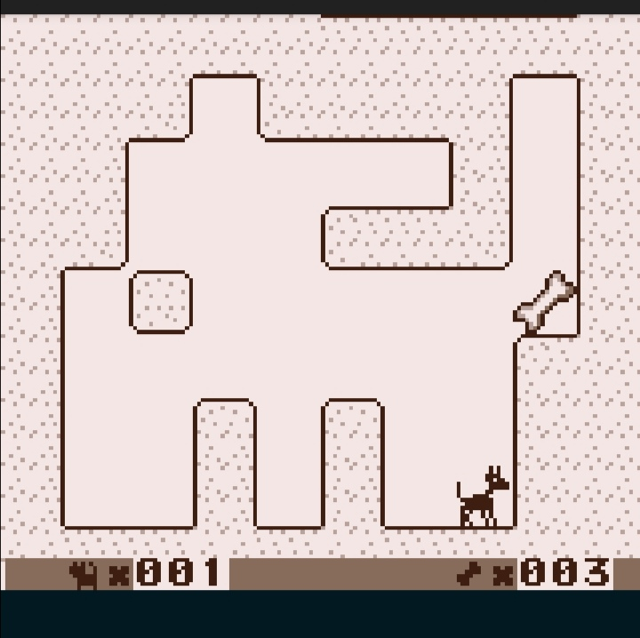
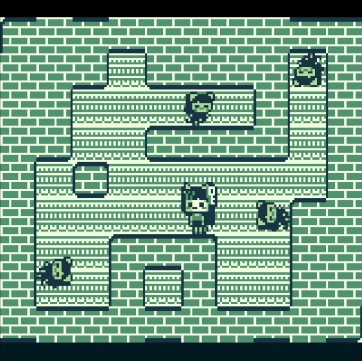
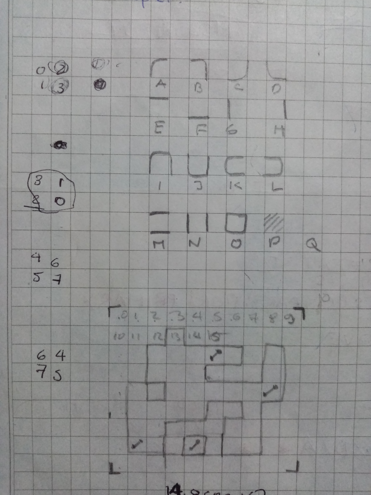

me refiero a la función draw_map() es #magia , no lo notaste el "#" hash

si, la operación hash que implente para calcular el tile correspondiente en base a sólo una matriz binaria lo utilize en bonefinder y como es super genial también lo estoy usando en este

pero de que se trata?
en si es una operación que toma los tiles adyacentes y les asigna un valor que sea potencia de 2 y luego los suma de la siguiente forma
[. ][2^1][. ]
[2^2][. ][2^3]
[. ][2^4][. ]
o como gustes
el resultado te dará con exactitud cuáles tiles son sólidos o no.
como en gbdk el joypad() se mapea de manera similar usando las definiciones J_UP J_DOWN J_LEFT y J_RIGHT decidí utilizar estas mismas ya que en el fondo son solo definiciones #define es decir que el compilador cuando ve alguno de estos lo cambia por sus respectivos valores 0x01 0x02... etc (ver include/gb.h)
void calcule_hash(UBYTE U,UBYTE mapa[]){
hash=0x00;
if(mapa[U]==0x01){
if(mapa[U-1]==0x00||mapa[U-1]==0x02){ hash+=J_LEFT;}
if(mapa[U+1]==0x00||mapa[U+1]==0x02){ hash+=J_RIGHT;}
if(mapa[U+10]==0x00||mapa[U+10]==0x02){hash+=J_DOWN;}
if(mapa[U-10]==0x00||mapa[U-10]==0x02){hash+=J_UP;}
}
//fix for indexoff
if(U<10) {hash=hash&~J_UP;}
if(U>0x50 && U<0x5A){hash=hash&~J_DOWN;}
if(U%10==0){ hash=hash&~J_LEFT;}
if(U%10==9){ hash=hash&~J_RIGHT;}
if(mapa[U]==0x00){hash=0xFF;}
if(mapa[U]==0x02){hash=J_A;}
}
//y luego
void draw_hash(UBYTE X,UBYTE Y,UBYTE U,UBYTE mapa[]){
calcule_hash(U,mapa);
switch(hash){
case J_LEFT+J_UP: set_bkg_tiles(X*2,Y*2,2,2,Tile_A);break;
case J_UP+J_RIGHT: set_bkg_tiles(X*2,Y*2,2,2,Tile_B);break;
case J_RIGHT+J_DOWN:set_bkg_tiles(X*2,Y*2,2,2,Tile_C);break;
case J_DOWN+J_LEFT: set_bkg_tiles(X*2,Y*2,2,2,Tile_D);break;
case J_UP: set_bkg_tiles(X*2,Y*2,2,2,Tile_E);break;
case J_DOWN: set_bkg_tiles(X*2,Y*2,2,2,Tile_F);break;
case J_LEFT: set_bkg_tiles(X*2,Y*2,2,2,Tile_G);break;
case J_RIGHT: set_bkg_tiles(X*2,Y*2,2,2,Tile_H);break;
case J_RIGHT+J_LEFT+J_UP: set_bkg_tiles(X*2,Y*2,2,2,Tile_I);break;
case J_RIGHT+J_LEFT+J_DOWN:set_bkg_tiles(X*2,Y*2,2,2,Tile_J);break;
case J_UP+J_DOWN+J_LEFT: set_bkg_tiles(X*2,Y*2,2,2,Tile_K);break;
case J_UP+J_DOWN+J_RIGHT: set_bkg_tiles(X*2,Y*2,2,2,Tile_L);break;
case J_UP+J_DOWN: set_bkg_tiles(X*2,Y*2,2,2,Tile_M);break;
case J_LEFT+J_RIGHT: set_bkg_tiles(X*2,Y*2,2,2,Tile_N);break;
case J_DOWN+J_UP+J_LEFT+J_RIGHT:set_bkg_tiles(X*2,Y*2,2,2,Tile_O);break;
case 0x00:set_bkg_tiles(X*2,Y*2,2,2,Tile_P);break;
case 0xFF:set_bkg_tiles(X*2,Y*2,2,2,PSY_MOS);break;
case J_A:set_bkg_tiles(X*2,Y*2,2,2,Tile_Hueso);break;
}
}
void draw_map(UBYTE mapa[]){
LOAD_PSY_BKG(rand()%0x0A);
for(i=0;i<90;i++){
draw_hash(i%10,i/10,i,mapa);
}
}
//fin
22
